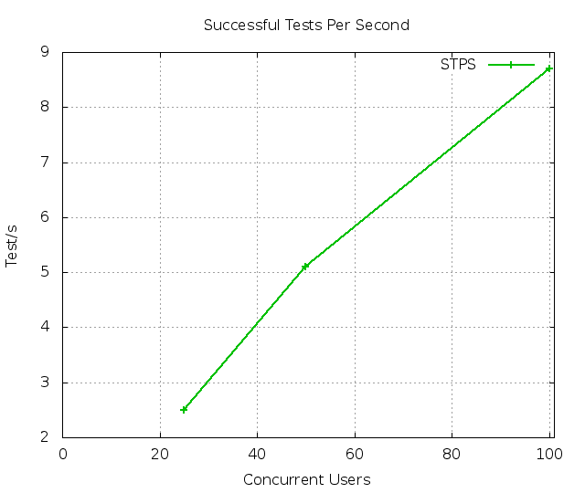
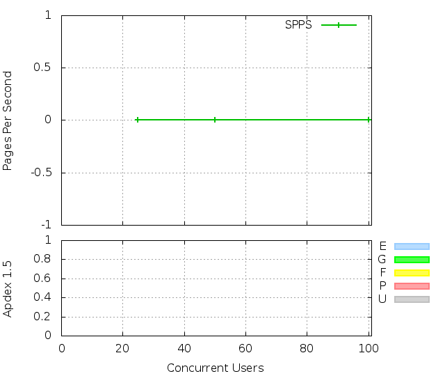
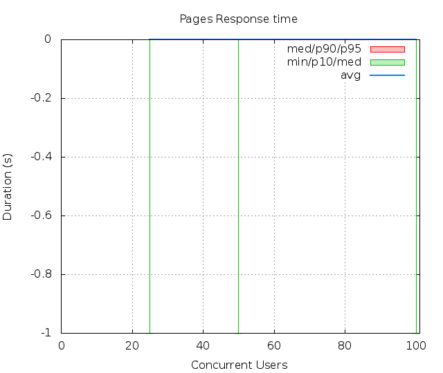
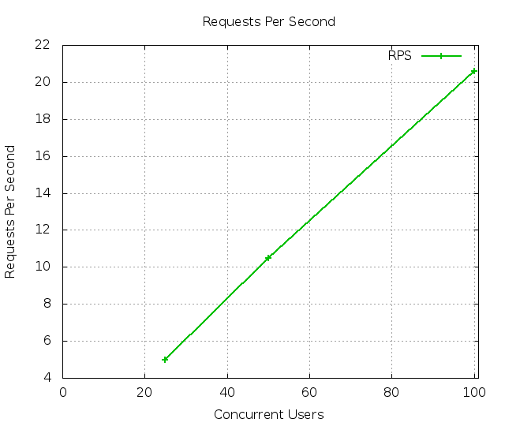
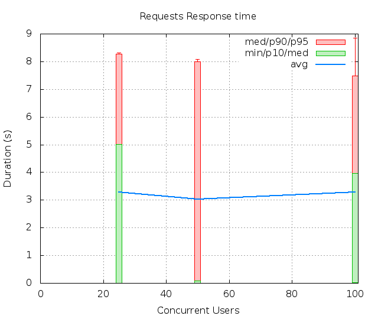
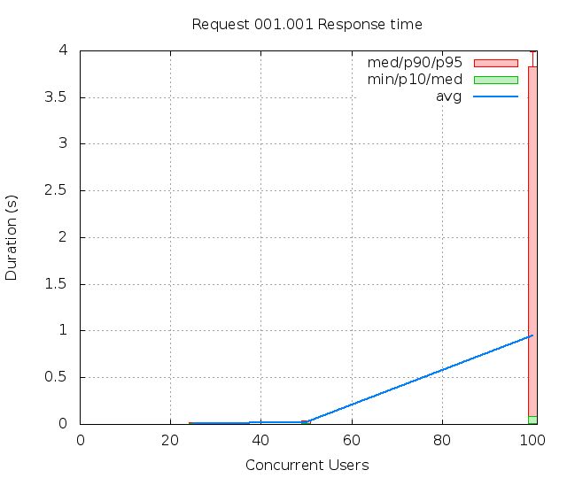
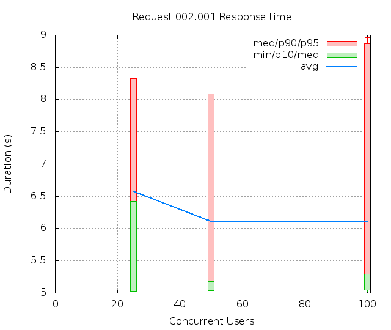

| Date: | 2012-08-03 15:50:10 |
|---|
Abstract
Simply testing a default static page Bench result of Dav.test_simple: Access a DAV server and query the addressbook
Table of contents
The test Dav.test_simple contains:
The bench contains:
The number of Successful Tests Per Second (STPS) over Concurrent Users (CUs).

CUs STPS TOTAL SUCCESS ERROR 25 2.500 25 25 0.00% 50 5.100 51 51 0.00% 100 8.700 87 87 0.00%
The number of Successful Pages Per Second (SPPS) over Concurrent Users (CUs). Note that an XML RPC call count like a page.
 
CUs Apdex* Rating SPPS maxSPPS TOTAL SUCCESS ERROR MIN AVG MAX P10 MED P90 P95 25 0.000 UNACCEPTABLE 0.000 0.000 0 0 0.00% 0.000 0.000 0.000 -1.000 -1.000 -1.000 -1.000 50 0.000 UNACCEPTABLE 0.000 0.000 0 0 0.00% 0.000 0.000 0.000 -1.000 -1.000 -1.000 -1.000 100 0.000 UNACCEPTABLE 0.000 0.000 0 0 0.00% 0.000 0.000 0.000 -1.000 -1.000 -1.000 -1.000 * Apdex 1.5
The number of Requests Per Second (RPS) successful or not over Concurrent Users (CUs).
 
CUs Apdex* Rating* RPS maxRPS TOTAL SUCCESS ERROR MIN AVG MAX P10 MED P90 P95 25 0.610 POOR 5.000 15.000 50 50 0.00% 0.008 3.292 8.354 0.008 5.021 8.275 8.328 50 0.662 POOR 10.500 47.000 105 105 0.00% 0.008 3.034 8.961 0.008 0.081 7.993 8.090 100 0.643 POOR 20.600 84.000 206 206 0.00% 0.007 3.274 9.015 0.011 3.960 7.486 8.856 * Apdex 1.5
The 5 slowest average response time during the best cycle with 25 CUs:
Req: 001, options, url /sabredav/server.php/

CUs
Apdex*
Rating
TOTAL
SUCCESS
ERROR
MIN
AVG
MAX
P10
MED
P90
P95
25
1.000
Excellent
25
25
0.00%
0.008
0.013
0.029
0.008
0.009
0.021
0.021
50
1.000
Excellent
53
53
0.00%
0.008
0.017
0.081
0.008
0.011
0.036
0.041
100
0.885
Good
113
113
0.00%
0.007
0.945
4.006
0.009
0.082
3.834
3.988
* Apdex 1.5
Req: 001, PROPFIND, url /sabredav/server.php/addressbooks/schenard%40kronos-web.com/kronos

CUs
Apdex*
Rating
TOTAL
SUCCESS
ERROR
MIN
AVG
MAX
P10
MED
P90
P95
25
0.220
UNACCEPTABLE
25
25
0.00%
5.021
6.571
8.354
5.024
6.422
8.328
8.339
50
0.317
UNACCEPTABLE
52
52
0.00%
5.023
6.109
8.961
5.036
5.181
8.090
8.928
100
0.349
UNACCEPTABLE
93
93
0.00%
5.020
6.105
9.015
5.048
5.293
8.867
8.959
* Apdex 1.5
CUs: Concurrent users or number of concurrent threads executing tests.
Request: a single GET/POST/redirect/xmlrpc request.
Page: a request with redirects and resource links (image, css, js) for an html page.
STPS: Successful tests per second.
SPPS: Successful pages per second.
RPS: Requests per second, successful or not.
maxSPPS: Maximum SPPS during the cycle.
maxRPS: Maximum RPS during the cycle.
MIN: Minimum response time for a page or request.
AVG: Average response time for a page or request.
MAX: Maximmum response time for a page or request.
P10: 10th percentile, response time where 10 percent of pages or requests are delivered.
MED: Median or 50th percentile, response time where half of pages or requests are delivered.
P90: 90th percentile, response time where 90 percent of pages or requests are delivered.
P95: 95th percentile, response time where 95 percent of pages or requests are delivered.
Apdex T: Application Performance Index, this is a numerical measure of user satisfaction, it is based on three zones of application responsiveness:
Satisfied: The user is fully productive. This represents the time value (T seconds) below which users are not impeded by application response time.
Tolerating: The user notices performance lagging within responses greater than T, but continues the process.
Frustrated: Performance with a response time greater than 4*T seconds is unacceptable, and users may abandon the process.
By default T is set to 1.5s this means that response time between 0 and 1.5s the user is fully productive, between 1.5 and 6s the responsivness is tolerating and above 6s the user is frustrated.
The Apdex score converts many measurements into one number on a uniform scale of 0-to-1 (0 = no users satisfied, 1 = all users satisfied).
Visit http://www.apdex.org/ for more information.
Rating: To ease interpretation the Apdex score is also represented as a rating:
Report generated with FunkLoad 1.16.1, more information available on the FunkLoad site.